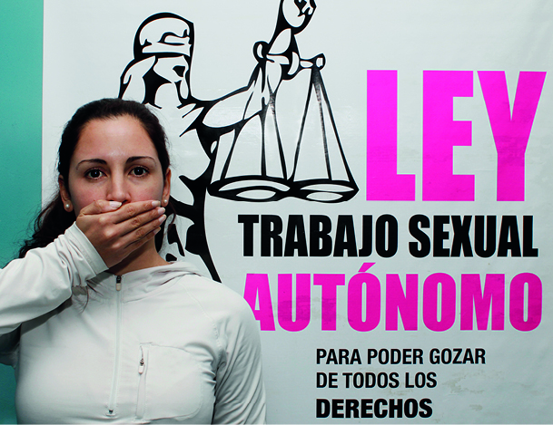

Asociación de Mujeres Meretrices de Argentina. Federico Frau Barros// Fotos: Juan Golubicki.
Vivir, luchar, AMMAR

“Somos triplemente discriminadas. Por mujeres, por pobres y por putas”, suelen decir las integrantes de la Asociación de Mujeres Meretrices Argentinas (AMMAR) en relación a las dificultades a las que se enfrentan día a día. La asociación surgió en Capital Federal en la década del ´90, hace ya 21 años, y su lucha sigue siendo la de lograr la regularización del trabajo sexual
En nuestro país el trabajo sexual no es un delito, pero sí su explotación y sus distintas vías de difusión. Las integrantes de la organización no quieren que se las trate como víctimas sino como mujeres capaces de decidir sobre su propio cuerpo. Hace dos años AMMAR presentó en el Senado de la Nación un proyecto de ley para la regularización del trabajo sexual autónomo a través del por entonces Senador Nacional por Tierra del Fuego, Osvaldo Lopez. El proyecto propone una ley que rija el trabajo sexual dentro del territorio argentino y reafirme el carácter laboral de la actividad, ejercida por personas mayores de edad que por propia elección ofrezcan servicios sexuales, a cambio de un pago. También incluye artículos que permiten diferenciar esta actividad de la trata de personas y de la explotación sexual de menores de edad y la de mayores de edad ejercidas por proxenetas.
“Estamos en contra de la explotación, y no en contra de la explotación en nuestro trabajo, sino en todos los trabajos”, dice Roxana, integrante de AMMAR. “Cuando nos dicen que nosotras explotamos nuestro cuerpo, respondemos: todos los trabajadores explotan su cuerpo”, cuenta. Roxana tiene 29 años, es trabajadora sexual hace 8 y dice que desde que renunció a su anterior trabajo y empezó con esto, nunca pensó en trabajar de otra cosa.
“No somos prostitutas, ni putas, ni trapos, ni jineteras, ni cueros, ni rameras, ejercemos el trabajo sexual. No estamos en situación de prostitución, ni nos prostituimos, ni vendemos nuestro cuerpo. Somos trabajadoras”, reza la guía para el abordaje periodístico del trabajo sexual que ellas mismas entregan y prepararon con la Red de mujeres Trabajadoras Sexuales de Latinoamérica y el Caribe (RedTraSex), organismo del que forman parte desde 1997.
“Nadie nos obliga a nada. Nosotras elegimos el precio, elegimos a qué hotel vamos y hasta elegimos el cliente. Si a nosotras nos regularizan, se va a disminuir la trata”, dice Karen, otra de las 6 mil integrantes de AMMAR. Karen tiene 34 años y ejerce la prostitución desde hace 12. Ella también rompe con otro lugar común que es el de criminalizar al cliente y cuenta que fueron justamente los clientes los que le enseñaron que hay una vida mejor. “No solo por lo económico, muchos han sido grandes consejeros. Es una mentira eso de que nos tratan mal”, dice.
“No nos podemos comprar una casa porque no nos dan un crédito, no podemos tener tarjeta de crédito”, se queja Ana, quien se acaba de sumar a la agrupación. Ana tiene 31 años y ejerce el trabajo sexual hace 7, tras renunciar a su trabajo de profesora de patín artístico porque siempre le pagaban el sueldo con atraso.
“Peleamos por ser monotributistas con categoría propia y no tener que usar una categoría que no es la nuestra. El trabajo sexual debe ser reconocido para que podamos tener una obra social, aportes de jubilación y poder acceder a créditos o un plan PROCREAR”, dice Georgina Orellano, presidenta de AMMAR en el marco legal, pero puertas adentro, secretaria general, ya que como ella explica se manejan como un sindicato de hecho y no de derecho. Con 29 años, Georgina es la secretaria general nacional más joven de la historia de la CTA de los Trabajadores y fue candidata a legisladora de capital federal por Alternativa Buenos Aires en las últimas elecciones, en la lista que tuvo a Pablo Ferreyra como candidato a Jefe de Gobierno.
Georgina es la cara más visible de la agrupación y su papel es fundamental para darle difusión a esta causa, en las que varias compañeras se ven obligadas al anonimato por seguir ocultando su situación a sus familias. Georgina tiene un hijo de 8 años a quien no le esconde ni su profesión ni su lucha. “Mi hijo sabe a lo que me dedico, pero a medias. En el colegio dice que su madre es una trabajadora sexual. También viene a las reuniones de AMMAR y cuando le pregunto qué es una trabajadora sexual dice: esto, alguien que lucha por derechos”, cuenta Georgina, con una sonrisa orgullosa.